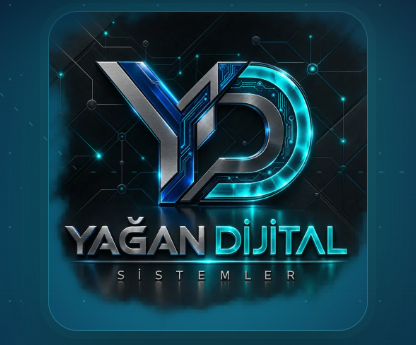

FİKİRDEN CANLIYA
Dijitalde Daha Fazlası
İşinizi büyüten web siteleri, akıllı dijital sistemler ve yapay zeka çözümleri.
Yağan Dijital Sistemler; farklı sektörler için ürünleşmiş dijital çözümler, kurumsal web sistemleri ve operasyonu hızlandıran akıllı altyapılar geliştirir.
Yapay ZekaSektörel WebCRM & PanellerDijital Ürünler

AIAkıllı Sistemler
WebSektörel Çözümler
CRMOperasyon Panelleri
LoyaltyMüşteri Sadakati
Fikirden Canlıya,Yanınızdayız.YAĞAN DİJİTAL SİSTEMLER
DİJİTAL ÜRÜNLERİMİZ
İşletmenize değer katan satış ürünleri.
Her ürün gerçek bir kullanım senaryosu ve satış ihtiyacı için geliştirilir. Hazır altyapı, sektörel uyarlama ve kurumsal entegrasyon seçenekleriyle sunulur.
AI Universe Cockpit
Belge yönetimi, sınıflandırma, doğrulama ve kurumsal AI otomasyonu.
İncele →İş Ortağım AI
İş süreçleri ve günlük operasyonlar için yapay zeka destekli dijital asistan.
Bilgi Al →Aurelis Loyalty OS
Müşteri sadakati, bağlılık ve tekrar satın alma süreçleri için yeni nesil sistem.
Canlı Demo →Davet Salonu Web Sistemi
Davet ve organizasyon işletmeleri için dönüşüm odaklı kurumsal web altyapısı.
Bilgi Al →Dijital Davetiye Sistemi
Özel günler ve etkinlikler için modern, paylaşılabilir dijital davetiye çözümü.
Bilgi Al →Organizasyon Tasarım Stüdyosu
Organizasyon markaları için hızlı kreatif, sunum ve görsel üretim sistemi.
Bilgi Al →Dijital Katalog Sistemi
Ürün ve hizmetlerinizi modern, mobil uyumlu dijital katalog ile sunun.
Bilgi Al →Dijital Lansman Sistemi
Yeni ürün, hizmet ve projeler için etkileyici dijital lansman deneyimi.
Bilgi Al →Katalog + Lansman Paketi
Tanıtım ve satış akışını tek dijital yapı içinde birleştiren güçlü paket.
Bilgi Al →Sektörel Web Sistemleri
Her sektöre özel tasarlanan, müşteri dönüşümünü hedefleyen web çözümleri.
Bilgi Al →CRM & Dijital Paneller
Müşteri, teklif, operasyon ve iş süreçlerini tek merkezde yönetin.
Bilgi Al →Yağan Akıllı Dijital Ekosistem
Web, CRM, yapay zeka ve dijital ürünleri işletmenize özel tek bir bütünleşik yapı altında birleştiren modüler ekosistem.
Bilgi Al →GERÇEK PROJELER
Fikirden canlıya taşıdığımız çalışmalar.
Farklı sektörlerde geliştirdiğimiz kurumsal web, CRM ve dijital dönüşüm projelerinden seçili örnekler.
ALO SİRTAKİ
Dans eğitimi, ön kayıt ve WhatsApp dönüşüm odaklı sektörel web sistemi.
Canlı Projeyi Aç →Latife Davet & Sanat
Etkinlik ve sanat deneyimini öne çıkaran premium kurumsal web arayüzü.
Canlı Projeyi Aç →La Kaffette
Premium kahve ve içecek vitrini için geliştirilen modern dijital deneyim.
SigortacıCepte
Sigorta teklif, müşteri ve operasyon süreçlerini destekleyen dijital sistem.
WEB TASARIM KATALOĞU
Tasarımları İncele →Web sitenizi seçin, işinize özel tasarlayalım.
Reklam ve müşteri kazanım modülümüz üzerinden sektörünüze uygun tasarım örneklerini inceleyin.
NASIL ÇALIŞIYORUZ?
Fikirden canlıya.
İhtiyacınızı analiz ediyor, doğru çözümü tasarlıyor ve güvenli biçimde yayına alıyoruz.
Strateji & Planlama
İhtiyaç, hedef kitle ve iş akışı netleştirilir.
Tasarım & Geliştirme
Markanıza ve sektörünüze uygun çözüm hazırlanır.
Entegrasyon & Yayın
Teknik bağlantılar tamamlanır ve sistem canlıya alınır.
Destek & Büyüme
Canlı sonrası geliştirme ve iyileştirme süreci devam eder.
HER SEKTÖR İÇİN ÖZEL ÇÖZÜMLER
Tek teknoloji yaklaşımı. Sektörünüze özel uygulama.
Hazır kalıplar yerine sektörünüzün gerçek müşteri yolculuğuna ve operasyonuna göre uyarlanmış dijital sistemler geliştiriyoruz.
Sigortacılık
Teklif, poliçe, müşteri ve CRM süreçlerinde dijital çözümler.
Detayları Gör →Hukuk & Danışmanlık
Kurumsal tanıtım, belge akışı ve müşteri iletişimi için akıllı sistemler.
Detayları Gör →Muhasebe & Finans
Belge, raporlama ve operasyon akışını sadeleştiren dijital altyapılar.
Detayları Gör →Kurumsal Firmalar
Web, CRM, katalog ve müşteri deneyimini tek ekosistemde birleştirin.
Detayları Gör →Sağlık
Kurumsal tanıtım, randevu ve dijital iletişim odaklı çözümler.
Detayları Gör →E-Ticaret & Perakende
Katalog, lansman, sadakat ve satış odaklı dijital sistemler.
Detayları Gör →✓
GÜVENLİ & ÖLÇEKLENEBİLİR ALTYAPI
Bugünü çözen, yarına hazır sistemler.
- Modüler mimariİhtiyaca göre yeni modüller ve entegrasyonlar eklenebilir.
- Mobil uyumlu deneyimTüm cihazlarda hızlı ve tutarlı kullanıcı deneyimi.
- Kurumsal entegrasyon yaklaşımıCRM, API ve operasyon sistemleriyle uyumlu yapılandırma.
İŞLETMEYE ÖZEL TEKLİF
Hazır paket değil, ihtiyacınıza göre doğru kapsam.
Ürün, kullanıcı, entegrasyon, içerik ve geliştirme ihtiyacınıza göre kapsam belirlenir. Böylece yalnızca ihtiyacınız olan yapıya yatırım yaparsınız.
PROJE BAZLI
Size Özel Teklif
- İhtiyaç analizi
- Ürün / modül seçimi
- Sektör uyarlaması
- Entegrasyon planı
- Canlıya geçiş desteği
SIK SORULAN SORULAR
Başlamadan önce bilmek isteyebilecekleriniz.
Yağan Dijital Sistemler hangi alanlarda çözüm sunuyor?
Yapay zeka, sektörel web sistemleri, CRM ve dijital paneller, sadakat, dijital davetiye, katalog, lansman ve organizasyon odaklı ürünler geliştiriyoruz.
Ürünler mevcut sistemlerimizle entegre olabilir mi?
Entegrasyon kapsamı kullandığınız altyapıya ve erişilebilir API veya veri yapısına göre proje aşamasında değerlendirilir.
Fiyatlandırma nasıl belirleniyor?
Kullanıcı sayısı, ihtiyaç duyulan ürün ve modüller, entegrasyon kapsamı ve proje gereksinimleri üzerinden size özel teklif hazırlanır.
Canlı demo talep edebilir miyiz?
Evet. Hazır demosu bulunan ürünler için WhatsApp üzerinden demo ve proje görüşmesi planlanabilir.
DİJİTAL DÖNÜŞÜM İÇİN İLK ADIM
WhatsApp ile Bilgi Alİşiniz için doğru sistemi birlikte kuralım.
Ürünlerimiz ve size özel dijital çözümler için bizimle iletişime geçin.